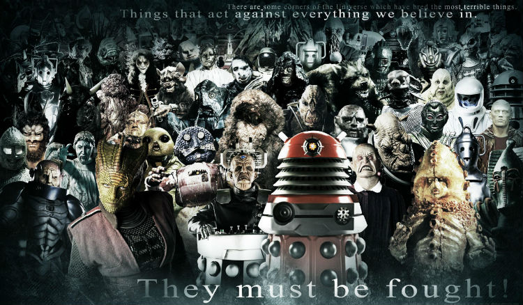
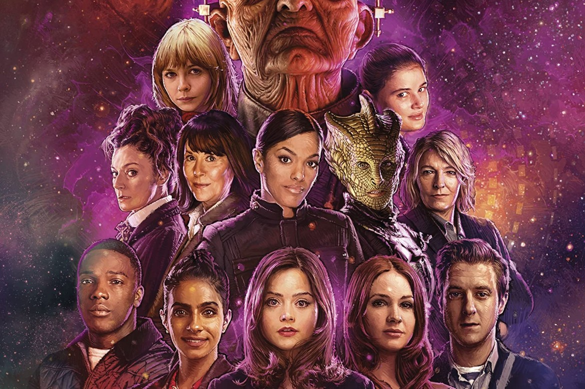
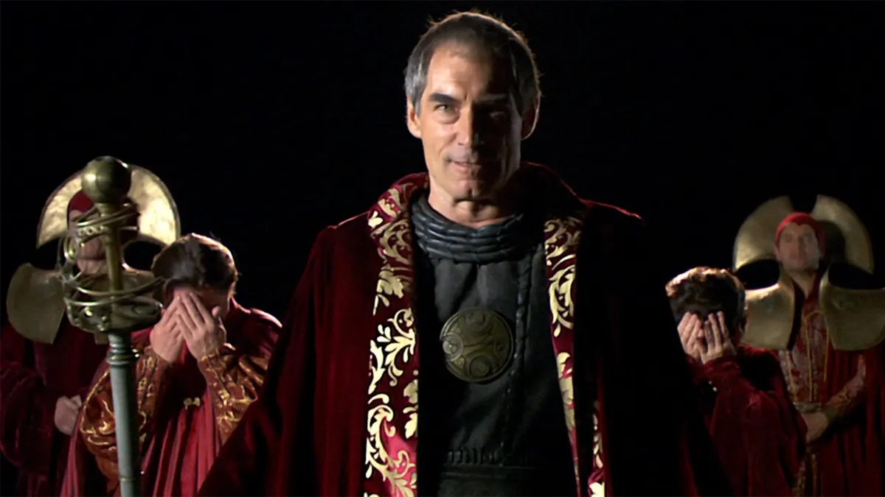

.png)
Os doutores
.webp)
Descubra a história dos diferentes Doutores que viajaram pela galáxia a bordo da TARDIS. Cada um trouxe sua própria personalidade única e contribuiu para a rica mitologia de Doctor Who.
O Doutor é um ser alienígena da raça conhecida como Senhores do Tempo, originária do planeta Gallifrey. Esta criatura extraordinária viaja pelo tempo e espaço em sua nave icônica, a TARDIS, que se disfarça como uma cabine de polícia azul por fora. Uma das características mais distintivas do Doutor é a habilidade de se regenerar, permitindo que o personagem assuma uma nova forma após morte ou fatalidade.
A motivação principal do Doutor é explorar o universo, fazer novas descobertas e proteger civilizações indefesas. Movido por um profundo senso de compaixão e justiça, o Doutor muitas vezes se envolve em conflitos intergalácticos, enfrentando inimigos como os Daleks, os Cybermen e outros seres poderosos.
Além de ser um aventureiro corajoso, o Doutor também é conhecido por formar laços estreitos com seus companheiros de viagem, humanos e alienígenas. Essas relações desempenham um papel crucial na narrativa, proporcionando momentos emocionais e humanos ao longo das muitas temporadas da série.
A personalidade do Doutor é multifacetada e muitas vezes reflete as experiências e aprendizados acumulados ao longo de suas encarnações. Seja como um defensor feroz da justiça, um estrategista brilhante ou um ser brincalhão, o Doutor continua a cativar o público com sua complexidade e carisma únicos.
Ciborgues
Os Cybermen são uma raça cibernética originária do planeta Mondas. Movidos pela busca pela perfeição, os Cybermen convertem seres orgânicos em ciborgues para eliminar emoções e fragilidades humanas. Eles são implacáveis na sua missão de assimilação e muitas vezes representam uma ameaça existencial para o universo.
A história dos Cybermen está entrelaçada com eventos trágicos de Mondas, levando à sua transformação em seres metálicos. Ao longo do tempo, o Doutor enfrentou várias iterações dos Cybermen em diferentes pontos da história e do universo.
Silêncio
O Silêncio é uma raça alienígena misteriosa com a habilidade única de serem esquecidos assim que estão fora do campo de visão direto. Eles são conhecidos por influenciar eventos importantes na história humana e galáctica, muitas vezes de maneiras obscuras.
Os Silêncio têm uma relação complicada com os Senhores do Tempo, especialmente com eventos em torno do planeta Gallifrey. Eles são uma ameaça persistente e intrigante ao Doutor e seus companheiros, deixando cicatrizes na memória daqueles que enfrentam essas criaturas enigmáticas.
Vilões Notáveis
Explore alguns dos vilões mais memoráveis que desafiaram o Doutor ao longo das eras. Suas maquinações maléficas e planos ardilosos mantiveram os fãs à beira de seus assentos.
O Mestre
O Mestre, um Senhor do Tempo renegado, é um arqui-inimigo do Doutor. Sua inteligência formidável e natureza vil o tornam uma força a ser reconhecida.
Daleks
Os Daleks, com sua obsessão pela pureza e sua brutalidade implacável, são uma das ameaças mais persistentes e mortais encontradas pelo Doutor.
Companhias do Doutor
Descubra as companhias que acompanharam o Doutor em suas viagens, desempenhando papéis cruciais em suas histórias. Esses companheiros, humanos e alienígenas, compartilham aventuras incríveis e contribuem para a rica tapeçaria do universo de Doctor Who.

Rose Tyler
Rose Tyler foi a primeira companheira do Novo Doutor, desempenhando um papel fundamental em suas primeiras aventuras. Sua coragem e determinação deixaram uma marca duradoura, e ela é lembrada como uma das companhias mais queridas pelos fãs.

Clara Oswald
Clara Oswald, também conhecida como a "Impossível Garota", teve uma ligação única com o Doutor, aparecendo em diferentes pontos de sua linha do tempo. Sua astúcia e compaixão foram elementos-chave em muitas aventuras, desafiando as expectativas e moldando o destino.

Yasmin Khan
Yasmin Khan, uma policial moderna, uniu-se ao Doutor em suas viagens mais recentes. Sua coragem diante do desconhecido e sua habilidade em lidar com situações desafiadoras a tornam uma companheira valiosa, enfrentando ameaças intergalácticas ao lado do Doutor.

Rory Williams
Rory Williams, conhecido por sua lealdade e coragem, acompanhou o Doutor e Amy em suas viagens. Sua jornada extraordinária incluiu momentos de heroísmo e sacrifício, contribuindo para a rica narrativa de Doctor Who.

Amy Pond
Amy Pond, a Garota que Esperou, embarcou em aventuras épicas com o Doutor. Sua ligação especial com o Doutor e sua determinação marcaram suas histórias, criando momentos emocionantes e inesquecíveis ao longo de sua jornada no universo de Doctor Who.
Senhores do Tempo
Os Senhores do Tempo são uma antiga raça de Gallifrey, dotados da habilidade de viajar no tempo. O Doutor, um Senhor do Tempo renegado, compartilha uma conexão única com sua espécie de origem.